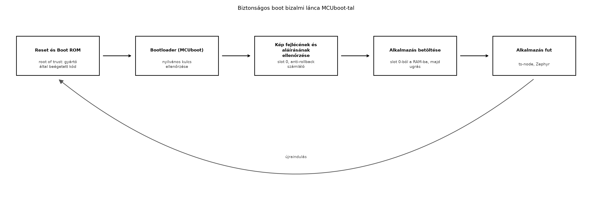

A TerraSense üvegház-monitorozó rendszerben a ts-node
eszközök a kihelyezés után fizikailag elérhetők lehetnek illetéktelen
személyek számára. Ha a firmware-t védő mechanizmus nélkül bárki
lecserélheti a flash tartalmát, a támadó saját kódot futtathat az
eszközön: hamis telemetriát küldhet, öntözőszelepet nyithat, vagy
további hálózati támadást indíthat. A biztonságos boot (secure boot)
elsődleges célja, hogy csak olyan firmware induljon el, amelyet a gyártó
vagy az üzemeltető aláírt, és amelyet azóta nem módosítottak. Ez a
biztosíték az eszköz teljes szoftveres életciklusának alapja, a
gyártástól az OTA-frissítésig.
Definíció. A bizalmi lánc (chain of trust) olyan réteges ellenőrzési sorozat, amelyben minden indítási lépés hitelesíti a következőt. A lánc kiindulópontja a gyökér bizalmi pont (root of trust, RoT): egy hardveres vagy gyártás során beégetett komponens, amelyet támadó nem tud módosítani. Az RoT általában egy boot ROM-ban tárolt elsőfokozatú betöltő, amely a második fokozatú betöltő (bootloader) aláírását ellenőrzi, majd a bootloader ellenőrzi az alkalmazás firmware-képét.
A Zephyr ökoszisztémában az ajánlott nyílt forrású bootloader az
MCUboot. Az MCUboot két flash-területet, úgynevezett
slotot használ: a slot 0 az aktív
alkalmazáskép, a slot 1 pedig a csere- vagy frissítési kép
helye. A bootloader induláskor ellenőrzi a slot 0-ban lévő
kép aláírását, és ha érvényes, átadja a vezérlést az alkalmazásnak. Ha a
slot 1-ben újabb, érvényes kép van, a bootloader
kicserélheti a slotokat, majd elindítja az új verziót.
Definíció. Az anti-rollback (visszagörgetés elleni védelem) olyan mechanizmus, amely megakadályozza, hogy egy támadó egy régebbi, ismert hibákat tartalmazó, de érvényes aláírással rendelkező firmware-t töltsön vissza az eszközre. Az MCUboot ezt a biztonsági számlálóval (security counter) valósítja meg, amely a képfejlécben tárolt monoton növekvő érték. A bootloader megtagadja azon képek indítását, amelyek számlálója kisebb, mint a legutóbb elfogadott érték. A számláló biztonságos tárolása hardveres védelem alatt álló, csak egyszer programozható memóriaterületen történik, így a támadó nem csökkentheti azt.
A firmware-kép formátuma MCUboot esetén a következő fő részekből áll:
A bootfolyamat a következő ábrán látható:

A boot ROM a gyártó által zárt, nem módosítható kód; a bootloader a flash egy elkülönített területén tárolt, szintén aláírt kép. Az ellenőrzéshez a bootloader a flash-be égetett vagy hardveresen védett nyilvános kulcsot használ, így a támadó nem cserélheti a kulcsot a bootloader módosítása nélkül, ami viszont aláírás-ellenőrzéshez kötött.
A firmware-aláírás folyamata az imgtool parancssori
eszközzel történik, amely az MCUboot referencia-implementációjának
része. A gyártó generál egy privát/publikus kulcspárt (általában ECDSA
P-256), a privát kulcsot biztonságos helyen tárolja, a nyilvános kulcsot
pedig a bootloaderrel együtt beégeti a flash-be. Az alkalmazás
lefordított binárisát az imgtool sign paranccsal írja alá,
amely hozzáfűzi a fejlécet, a TLV-ket és az aláírást.
A biztonságos boot bevezetésekor több tervezési döntést kell meghozni, amelyek befolyásolják a biztonsági szintet, a költséget és a bonyolultságot.
| Szempont | Lehetséges megoldások | Előnyök | Hátrányok |
|---|---|---|---|
| Root of trust típusa | Szoftveres (flash-ben tárolt elsőfokozat) | Olcsó, könnyen frissíthető | Támadó által módosítható, ha nincs hardveres védelem |
| Hardveres (ROM, Secure Element, TPM) | Magas biztonság, nem módosítható | Drágább, gyártói kötöttség | |
| Aláírási algoritmus | ECDSA P-256 (MCUboot alapértelmezett) | Kis kulcs, gyors ellenőrzés, szabványos | Implementációt igényel a bootloaderben |
| RSA (nagyobb kulcs) | Széles körben elterjedt | Nagyobb aláírás, lassabb ellenőrzés | |
| Anti-rollback | Security counter + hardveres tárolás | Megakadályozza a régi sebezhető verziók visszatöltését | Hardveres támogatás kell, a számláló növelése visszafordíthatatlan |
| Nincs anti-rollback | Egyszerűbb | Régi verzió visszatölthető, ha a támadó rendelkezik régi érvényes képpel | |
| Kulcstárolás | Bootloaderbe égetett nyilvános kulcs | Egyszerű, nem igényel külön hardvert | Kulcscsere nehéz (firmware frissítést igényel) |
| Secure Element (pl. ATECC608) | Kulcs fizikailag védett | Extra komponens, költség |
A TerraSense ts-node eszközöknél a cél a jó ár-érték
arány: kisméretű, olcsó MCU-kon a szoftveres RoT és a flash-be égetett
nyilvános kulcs elegendő, ha az eszköz fizikai védelme korlátozott, de a
támadási felületet elfogadják. Amennyiben az eszköz kritikus
infrastruktúrához kapcsolódik, hardveres Secure Element javasolt.
A következő labor célja, hogy a ts-node firmware-ből
aláírt MCUboot képet készítsünk. A natív native_sim boardon
az MCUboot bootloader nem fut, ezért a bootfolyamatot valós hardveren
ellenőrizhetjük majd; a labor elsődlegesen az imgtool
eszköz használatát és az aláírási folyamatot mutatja be. A lépések
Zephyr west környezetben futnak, az imgtool telepítése
Python csomagkezelővel történik.
Munkakönyvtár:
mkdir -p ~/iot-labor/i058 && cd ~/iot-labor/i0581. lépés: Az imgtool telepítése
python3 -m pip install --user imgtool
# vagy pipx használatával:
# pipx install imgtool2. lépés: Aláíró kulcspár generálása
imgtool keygen --key signing-key.pem --type ecdsa-p256A parancs létrehozza a signing-key.pem privát kulcsot. A
nyilvános kulcsot a bootloaderbe kell égetni; Zephyrben ezt a
CONFIG_BOOT_SIGNATURE_KEY_FILE opcióval adhatjuk meg (a
pontos név ellenőrzést igényel).
3. lépés: Egyszerű Zephyr alkalmazás létrehozása
A gyakorlathoz készítünk egy minimális Zephyr alkalmazást, amely a firmware verzióját naplózza.
CMakeLists.txt:
cmake_minimum_required(VERSION 3.20)
find_package(Zephyr REQUIRED HINTS $ENV{ZEPHYR_BASE})
project(ts_secure_boot_lab)
target_sources(app PRIVATE src/main.c)prj.conf:
CONFIG_BOOTLOADER_MCUBOOT=y
CONFIG_LOG=y
CONFIG_MAIN_STACK_SIZE=2048src/main.c:
#include <zephyr/kernel.h>
#include <zephyr/logging/log.h>
LOG_MODULE_REGISTER(i058, LOG_LEVEL_INF);
void main(void)
{
LOG_INF("Signed image running, version 1.0.0");
while (1) {
k_sleep(K_SECONDS(1));
}
}A CONFIG_BOOTLOADER_MCUBOOT=y a valós céleszközön a
bootloaderrel való együttműködést jelzi; native_sim-en a
bootloader nem fut, ezért a build során figyelmeztetés jelenhet meg. A
példa szempontjából a bináris kimenet elegendő.
4. lépés: Build
west build -b native_simA kimenet a build/zephyr/zephyr.bin fájl.
5. lépés: A kép aláírása
imgtool sign \
--key signing-key.pem \
--header-size 0x200 \
--align 8 \
--version 1.0.0 \
--slot-size 0x100000 \
build/zephyr/zephyr.bin \
signed.binA --header-size a képfejléc mérete (a bootloader és az
MCU architektúrájától függ), a --align a flash programozási
egységéhez igazodik, a --version a kép verziója, a
--slot-size a slot 0 mérete a flash-ben. Az
értékek illusztratívak, a konkrét boardhoz igazítandók.
6. lépés: Az aláírás ellenőrzése
imgtool verify --key signing-key.pem signed.binVárt kimenet:
Image version: 1.0.0
Signature valid.7. lépés: Flash-elés valós hardveren (opcionális)
Valós, MCUboot támogatással rendelkező board (például
nrf52840dk) esetén a west flash parancs a
bootloadert és az aláírt képet együtt tölti fel. Ehhez a
west.yml manifestben MCUboot modult kell hozzáadni, és a
prj.conf-ban a CONFIG_BOOTLOADER_MCUBOOT=y
mellett a bootloader konfigurációját is megadni. Ennek részletei
board-specifikusak, ezért ellenőrzést igényelnek.
8. lépés: A sign.sh szkript elkészítése
A későbbi OTA-frissítéshez (OTA-frissítés: A/B
képek, rollback, delta, fokozatos kiadás) automatizáljuk az
aláírást. Hozzunk létre egy sign.sh szkriptet a labor
könyvtárában:
#!/usr/bin/env bash
set -euo pipefail
KEY_FILE="signing-key.pem"
INPUT_BIN="$1"
OUTPUT_BIN="$2"
VERSION="$3"
if [[ $# -ne 3 ]]; then
echo "Használat: $0 <input.bin> <output.bin> <version>"
exit 1
fi
imgtool sign \
--key "${KEY_FILE}" \
--header-size 0x200 \
--align 8 \
--version "${VERSION}" \
--slot-size 0x100000 \
"${INPUT_BIN}" \
"${OUTPUT_BIN}"Tegyük futtathatóvá:
chmod +x sign.shA szkript a későbbi OTA-frissítés során újra felhasználható lesz: az új firmware verziójával meghívva, ugyanazzal a kulccsal készíti el a hitelesített képet.
A labor során az alábbi parancsokkal győződhetünk meg a folyamat helyességéről:
imgtool verify --key signing-key.pem signed.bin –
ellenőrzi az aláírást és kiírja a verziót;imgtool dumpinfo signed.bin – megjeleníti a képfejléc
mezőit (méret, verzió, security counter);grep "version" signed.bin – binárisban nem célszerű,
helyette az imgtool dumpinfo használata javasolt.Tipikus hibák és javításuk:
| Tünet | Lehetséges ok | Javítás |
|---|---|---|
imgtool verify hibát jelez: signature invalid |
A nyilvános kulcs nem egyezik az aláíró privát kulccsal, vagy a kép sérült | Ellenőrizze, hogy a --key paraméter ugyanazt a kulcsot
használja, mint amellyel aláírták; próbálja újra az aláírást |
imgtool sign hibát jelez: header size mismatch |
A --header-size nem egyezik a bootloader
beállításával |
Állítsa a --header-size értékét a cél boardon
beállított MCUBOOT_HEADER_SIZE-hoz (ellenőrizze a Zephyr
dokumentációt) |
| A bootloader nem indul a valós hardveren | A bootloader nincs a flash elejére írva, vagy a slot 0
kezdőcíme rossz |
Ellenőrizze a linker szkriptet és a partíciós táblát; a
west flash parancsnak a bootloadert és az alkalmazást
együtt kell felírnia |
| Az alkalmazás nem indul a bootloader után | Az aláírt kép nem a slot 0-ba került, vagy a kép mérete
meghaladja a slot méretét |
Ellenőrizze a --slot-size értékét és a tényleges
partíciós táblát |
| A fejlesztői debug port aktív | A felszabadított eszközön a debug interfész (SWD, JTAG) engedélyezett, ami a flash tartalmának módosítását teszi lehetővé | Gyártáskor zárja le a debug portot (például biztosítékokkal vagy flash-olvasásvédelemmel), ahogyan a következő szakaszban tárgyaljuk |
A biztonságos boot önmagában nem elegendő, ha a támadó közvetlenül a debug interfészen keresztül tudja a flash tartalmát olvasni vagy módosítani. A legtöbb MCU lehetőséget kínál a debug hozzáférés korlátozására:
Ezek a beállítások a gyártás során alkalmazandók, mert utólag gyakran
nem vagy csak korlátozottan módosíthatók. A fejlesztői példányokon a
debug port nyitva marad a teszteléshez, de a gyártási folyamatba be kell
építeni a lezárást. A TerraSense esetében a ts-node
eszközök gyártási konfigurációjában dokumentálni kell ezeket a
lépéseket.
Magyarázza el, mi a különbség a root of trust és a bootloader között a biztonságos boot folyamatában. Miért nem elegendő a bootloader aláírása, ha a root of trust nem hardveres?
Egy Zephyr alkalmazás lefordított mérete 128 KiB. Az MCUboot
képfejléc 512 B, az aláírás 64 B (ECDSA P-256). Mekkora legalább a
slot 0 mérete, ha a flash programozási egysége 8 B, és a
képet 8 bájthoz igazítva kell tárolni? Válaszát indokolja.
Készítse el a sign.sh szkriptet a laborban leírtak
szerint, majd futtassa le egy v1.0.0 verziójú aláírt képre,
és ellenőrizze az imgtool verify parancs kimenetét. Ez a
szkript lesz a továbbvitt eredmény az OTA-frissítés:
A/B képek, rollback, delta, fokozatos kiadás alfejezethez.
Módosítsa a sign.sh-t úgy, hogy egy másik kulccsal
próbálja ellenőrizni az aláírt képet. Mi történik, és milyen hibatünetet
tapasztal? Írja le, hogyan lehetne ezt a hibát a gyártási folyamatban
automatikusan észlelni.
A root of trust (RoT) a bizalmi lánc első láncszeme, amelynek hitelességét fizikai vagy gyártási garancia biztosítja; ez jellemzően egy gyártó által beégetett boot ROM kód. A bootloader egy második fokozatú betöltő, amelyet az RoT ellenőriz, majd a bootloader ellenőrzi az alkalmazást. Ha az RoT szoftveres (pl. flash-ben tárolt), a támadó módosíthatja azt, és így a teljes ellenőrzési lánc megkerülhető. Hardveres RoT esetén ez nem lehetséges, mert a kód fizikailag nem módosítható.
A szükséges slot méret: az alkalmazás bináris (128 KiB = 131072 B) + képfejléc (512 B) + aláírás (64 B) = 131648 B. Mivel az igazítás 8 B, a méretet felfelé kerekítjük a következő 8-as többszörösre: 131648 / 8 = 16456, maradék nélkül osztható, tehát a minimális slot méret 131648 B, azaz 128,5625 KiB. Gyakorlatban a slot méretét a flash partíciós táblájához igazítjuk, és kerekítjük, például 132 KiB vagy a következő szabványos partícióméret (pl. 256 KiB) a biztonságos frissítéshez.
A sign.sh tartalmát a labor részben megadtuk.
Futtatás:
./sign.sh build/zephyr/zephyr.bin signed.bin 1.0.0
imgtool verify --key signing-key.pem signed.binVárt kimenet:
Image version: 1.0.0
Signature valid.A szkript a signing-key.pem privát kulcsot használja, és
a kimeneti signed.bin fájlt hozza létre. Az OTA-frissítés: A/B képek, rollback, delta, fokozatos
kiadás OTA-frissítés során ugyanezt a szkriptet hívjuk meg az új
verzióval.
Generáljunk egy másik kulcsot:
imgtool keygen --key other-key.pem --type ecdsa-p256
imgtool verify --key other-key.pem signed.binVárt kimenet: hibaüzenet, például Signature invalid vagy
hasonló, mert a nyilvános kulcs nem egyezik az aláíró privát kulccsal. A
gyártási folyamatban ezt úgy lehet automatikusan észlelni, hogy a CI/CD
pipeline az aláírás után azonnal lefuttatja az
imgtool verify parancsot a hivatalos nyilvános kulccsal, és
csak akkor engedi kiadni a firmware-t, ha a kilépési kód 0. Ezenkívül a
bootloader indulásakor is ellenőrzi az aláírást, és hibás kulcs esetén
nem indítja el az alkalmazást.
A biztonságos boot a bizalmi lánc elvén alapul: a root of trust
ellenőrzi a bootloadert, a bootloader pedig az alkalmazás aláírását. Az
MCUboot a Zephyr ajánlott bootloadere, két slotot (slot 0,
slot 1) és képfejlécben tárolt aláírást használ. Az
anti-rollback security counterrel akadályozza meg a régebbi, sebezhető
verziók visszatöltését. A debug portok lezárása és a
flash-olvasásvédelem a fizikai támadások ellen véd. Továbbvitt
eredmények: a ~/iot-labor/i058/ könyvtárban
létrehozott signing-key.pem privát kulcs és a futtatható
sign.sh szkript, amely az imgtool sign
parancsot automatizálja. A szkript ugyanazt a kulcsot és
slot-beállításokat használja, és az OTA-frissítés:
A/B képek, rollback, delta, fokozatos kiadás alfejezetben az új
firmware verziók aláírására fog szolgálni.
CONFIG_BOOTLOADER_MCUBOOT és a bootloader
integráció)Ellenőrzési igény: az imgtool aktuális verziójának
pontos telepítési parancsa, a --header-size és
--slot-size konkrét értékei board-tól függenek, ezért a
valós céleszköz kiválasztásakor ellenőrizni kell. A
CONFIG_BOOT_SIGNATURE_KEY_FILE neve és a
native_sim board MCUboot-támogatása Zephyr verziófüggő, a
jelenlegi stabil kiadásban ellenőrizendő. A debug port lezárására és
flash-olvasásvédelemre vonatkozó beállítások gyártó- és
MCU-specifikusak.